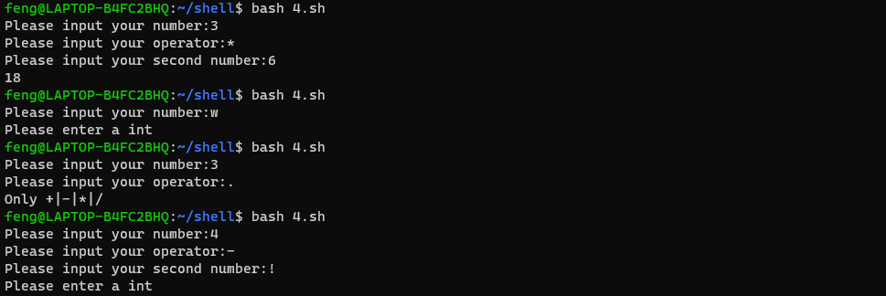

shell脚本开发之数值计算
把复杂的命令执行过程，通过逻辑代码，组成一个脚本文件，再去执行该文件。
shebang
脚本执行方式
1
2
3
4
| source 1.sh
. 1.sh
bash 1.sh
./1.sh
|
一些常用的变量
1
2
3
| echo $UID
echo $USER
echo $HOME
|
数值计算（只支持整数）
1
2
3
4
5
6
7
8
9
10
11
12
13
14
15
16
17
18
19
|
echo $((1+4))
echo $((1-4))
echo $((1*4))
echo $((1/4))
echo $((4/2))
echo $((5%2))
echo $((5**2))
num=2
echo $((num*2))
((num=num*2))
echo $((num=num*2))
echo $((num++))
echo $((++num))
echo $((num--))
echo $((--num))
|
判断用户是否输入为数字
知识点：
1
2
3
4
5
6
7
8
9
10
11
12
13
14
15
16
17
18
19
20
21
22
23
24
25
26
27
28
29
30
| #!/bin/bash
print_usage(){
printf "Please enter a int\n"
exit 1
}
read -p "Please input your number:" firstnum
if [ -n "`echo $firstnum|sed 's/[0-9]//g'`" ]
then
print_usage
fi
read -p "Please input your operator:" op
if [ "${op}" != "+" ] && [ "${op}" != "-" ] && [ "${op}" != "*" ] && [ "${op}" != "/" ]
then
echo "Only +|-|*|/"
exit 2
fi
read -p "Please input your second number:" secondnum
if [ -n "`echo $secondnum|sed 's/[0-9]//g'`" ]
then
print_usage
fi
echo $(($firstnum$op$secondnum))
|

let
expr
expr 必须是传参方式，空格传参，有特殊含义就不行，不太好用
1
2
3
4
5
6
7
8
9
| expr 2+4
expr 2 + 4
expr 2 - 4
expr 2 * 4
expr 2 \* 4
expr 2 \/ 4
expr 4 \/ 2
expr 3 % 2
expr length 1234567
|
1
2
3
4
5
6
7
8
9
10
11
12
13
14
15
|
expr match 234.jpg23.png ".*\.png"
expr match 234.jpg23.png ".*\.jpg"
expr 234.jpg23.png ":" ".*\.png"
expr 234.jpg23.png ":" ".*\.jpg"
expr substr 12345678 4 2
expr substr 12345678 1 2
expr index 12345678abc a
expr index 12345678abc 4
expr index 12345678abc d
|
bc 计算器
有交互式计算，支持小数计算。开发主要用非交互式的.
计算 1 到 100 之和
1
2
3
4
5
| echo {1..100} | tr " " "+" | bc
seq -s "+" 100 | bc
echo $((`seq -s "+" 100`))
expr `seq -s " + " 100`
seq -s " + " 100 | xargs expr
|
awk 计算
awk 也支持小数计算
1
2
| echo "1.4 1.6" | awk '{print $1*$2}'
echo "3.2 2.2" | awk '{print $1/$2}'
|
中括号计算
1
2
| echo $[num+2]
num=$[num+2]
|